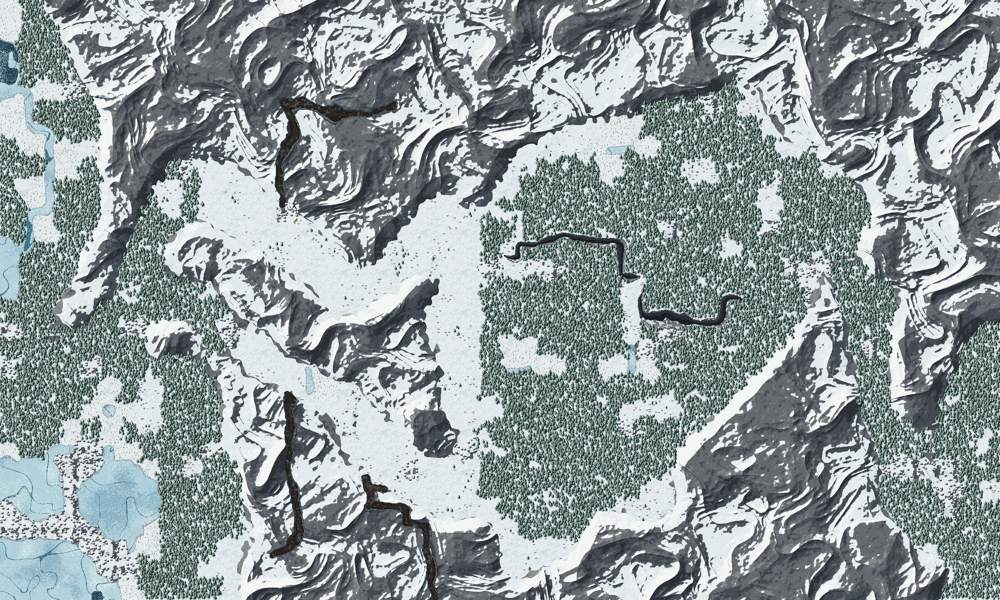
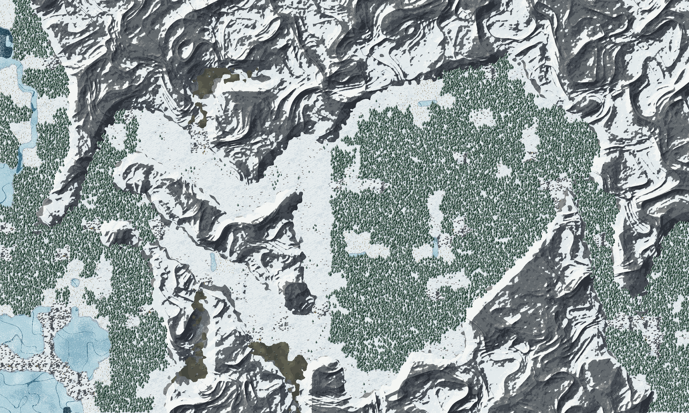
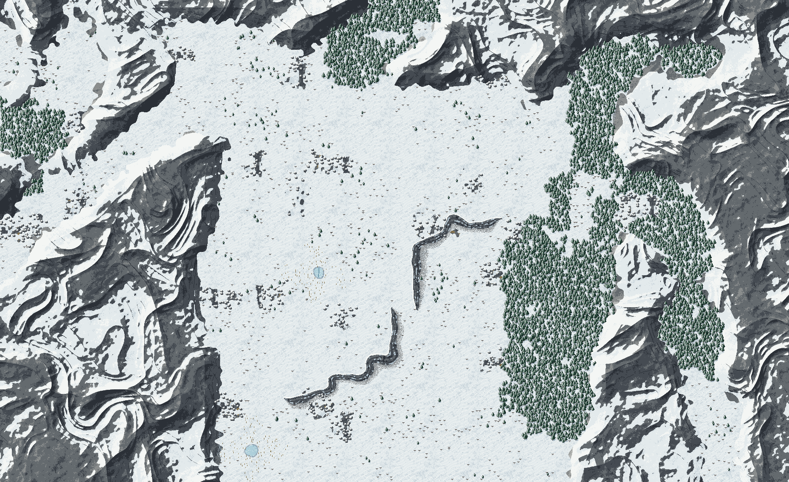
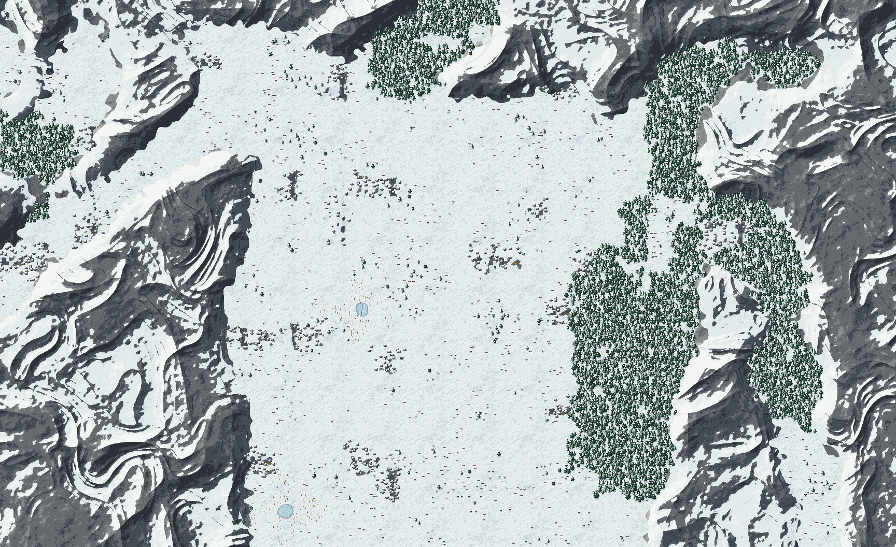
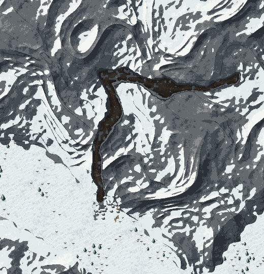
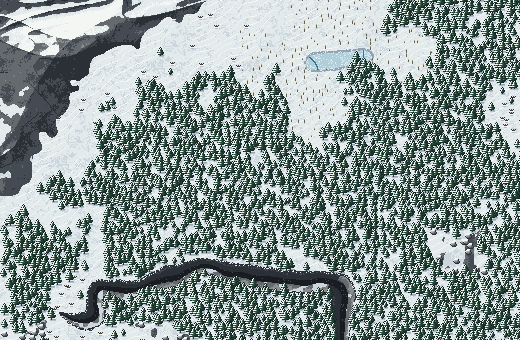
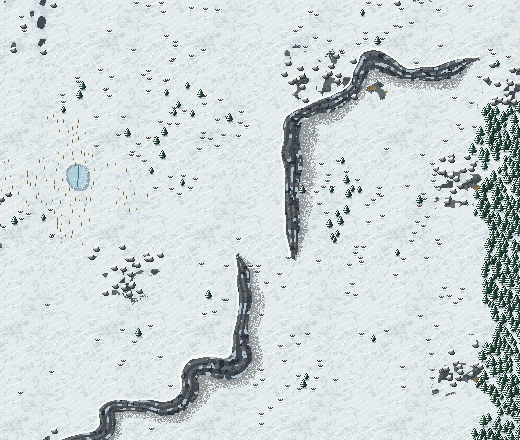

<title>Caves and Ravines</title>
<meta name="claude:viewport-fit-sides" content="cover">
<link rel="stylesheet" href="https://fonts.googleapis.com/css2?family=Pixelify+Sans:wght@500;700&family=Barlow+Semi+Condensed:wght@400;500;600&display=swap">
<style>
/* Layout: one column. Before/after plates at map scale, then 1:1 details, then the decisions. One dark look, like the game. */
:root {
  --bg: #15191c; --plate: #1d2327; --line: #2e383e; --fg: #e3eaec; --dim: #93a3ad; --ember: #f5811f; --ice: #9cc3d1;
  --display: "Pixelify Sans", ui-monospace, monospace; --body: "Barlow Semi Condensed", "Arial Narrow", system-ui, sans-serif;
  color-scheme: dark;
}
html, body { background: var(--bg); color: var(--fg); }
body { font: 17px/1.5 var(--body); padding-left: max(16px, env(safe-area-inset-left, 0px)); padding-right: max(16px, env(safe-area-inset-right, 0px)); padding-block: 28px 56px; }
main { max-width: 1000px; margin: 0 auto; display: grid; gap: 34px; }
h1, h2, h3 { font-family: var(--display); font-weight: 700; margin: 0; text-wrap: balance; }
h1 { font-size: 34px; }
h2 { font-size: 21px; color: var(--ice); }
h3 { font: 600 15px var(--body); letter-spacing: .06em; text-transform: uppercase; }
p { margin: 0; max-width: 68ch; color: var(--dim); }
section { display: grid; gap: 12px; }
header { display: grid; gap: 8px; }
.tabs { display: flex; flex-wrap: wrap; gap: 6px; }
.tabs button { font: 600 14px var(--body); letter-spacing: .04em; text-transform: uppercase; color: var(--dim); background: var(--plate); border: 1px solid var(--line); padding: 7px 12px; cursor: pointer; }
.tabs button[aria-pressed="true"] { color: var(--bg); background: var(--ice); border-color: var(--ice); }
.tabs button:focus-visible, input[type=range]:focus-visible { outline: 2px solid var(--ember); outline-offset: 2px; }
.cmp { position: relative; width: 100%; max-width: 100%; border: 1px solid var(--line); overflow: hidden; user-select: none; touch-action: pan-y; cursor: ew-resize; }
.cmp img { position: absolute; inset: 0; width: 100%; height: 100%; image-rendering: pixelated; max-width: none; }
.cmp .top { clip-path: inset(0 calc(100% - var(--x, 50%)) 0 0); }
.cmp .bar { position: absolute; top: 0; bottom: 0; left: var(--x, 50%); width: 2px; background: var(--ember); transform: translateX(-1px); }
.cmp .tag { position: absolute; top: 10px; font: 600 13px var(--body); letter-spacing: .06em; text-transform: uppercase; background: rgba(21,25,28,.85); padding: 3px 8px; }
.cmp .l { left: 10px; } .cmp .r { right: 10px; color: var(--ice); }
input[type=range] { width: 100%; accent-color: var(--ember); }
label { color: var(--dim); font-size: 14px; }
.details { display: grid; grid-template-columns: repeat(auto-fit, minmax(290px, 1fr)); gap: 14px; }
figure { margin: 0; background: var(--plate); padding: 10px; display: grid; gap: 8px; min-width: 0; }
figure .px { overflow: hidden; border: 1px solid var(--line); }
figure img { display: block; width: 100%; image-rendering: pixelated; }
figcaption { display: grid; gap: 4px; }
figcaption span { font-size: 15px; color: var(--dim); }
.ask { background: var(--plate); border-left: 3px solid var(--ember); padding: 16px 18px; display: grid; gap: 10px; }
.ask ol { margin: 0; padding-left: 20px; color: var(--dim); display: grid; gap: 8px; max-width: 72ch; }
.ask b { color: var(--fg); font-weight: 600; }
code { font-size: 14px; color: var(--fg); }
@media (prefers-reduced-motion: reduce) { * { transition: none !important; } }
</style>

<main>
  <header>
    <h1>Caves and ravines</h1>
    <p>Draft textures for the rebuild's web map, drawn by the game's own terrain renderer on the world seed 17 generates. Drag across each picture: the left is the map on <code>main</code> today, the right is the draft. Use the buttons to see the draft in summer.</p>
  </header>

  <div class="tabs" role="group" aria-label="Season of the draft">
    <button type="button" data-season="winter" aria-pressed="true">Winter</button>
    <button type="button" data-season="summer" aria-pressed="false">Summer</button>
  </div>

  <section aria-labelledby="h-caves">
    <h2 id="h-caves">Caves and a ravine</h2>
    <p>Three caves run through the range on the left. The ravine cuts through the forest on the right. Today a cave shows as a smear of the old cave-floor tile, its mouth is a small sprite, and the ravine is not drawn at all.</p>
    <div class="cmp" id="cmp-caves" style="--x:50%;aspect-ratio:2400/1440">
      
      
      <div class="bar"></div>
      <span class="tag l">Today</span><span class="tag r">Draft</span>
    </div>
    <label for="s-caves">Split position</label>
    <input id="s-caves" type="range" min="0" max="100" value="50">
  </section>

  <section aria-labelledby="h-cliffs">
    <h2 id="h-cliffs">Cliffs</h2>
    <p>Two cliff lines cross an open basin. They block travel today, but the map shows nothing there.</p>
    <div class="cmp" id="cmp-cliffs" style="--x:50%;aspect-ratio:1728/1056">
      
      
      <div class="bar"></div>
      <span class="tag l">Today</span><span class="tag r">Draft</span>
    </div>
    <label for="s-cliffs">Split position</label>
    <input id="s-cliffs" type="range" min="0" max="100" value="50">
  </section>

  <section aria-labelledby="h-detail">
    <h2 id="h-detail">At 1:1, as the game draws it</h2>
    <p>48 px per cell, one art pixel per screen pixel.</p>
    <div class="details">
      <figure>
        <div class="px"></div>
        <figcaption><h3>Cave</h3><span>A passage cut through the rock along the cave's cells, wandering and ragged, wider where it turns or forks. Fallen rock and grit on a dark floor. The far wall catches the light, the near wall is black, and the mouth opens onto the ground outside and darkens inward.</span></figcaption>
      </figure>
      <figure>
        <div class="px"></div>
        <figcaption><h3>Ravine</h3><span>A dark cleft along the cells' shared boundary, rounded where it steps from cell to cell, narrowing to nothing at its ends. The floor is unlit, the lower-right wall faces the light, and its ledges hold snow when the ground does.</span></figcaption>
      </figure>
      <figure>
        <div class="px"></div>
        <figcaption><h3>Cliff</h3><span>A one-sided step: a pale lip on the high ground (snow in winter), a striated rock face with fissures and snowy ledges, and a shadow on the low ground below it.</span></figcaption>
      </figure>
    </div>
  </section>

  <section class="ask" aria-labelledby="h-ask">
    <h2 id="h-ask" style="color:var(--fg)">What approval covers</h2>
    <ol>
      <li><b>The three looks above.</b> All three are drawn in world space, like the rivers and mountains, so nothing repeats from cell to cell. They need no new art files: the cave floor's old tile art is retired.</li>
      <li><b>Which way a cliff drops.</b> The Sim stores a cliff only as a blocked edge between two cells, with no high side. The draft always drops toward the lower right, so every face sits in shadow under the top-left light. The alternative is to give each cliff a high side when it is generated.</li>
      <li><b>Caves shown as a cut-away.</b> A known cave is drawn as an open passage through the rock, so its layout reads from above. It stays dark until it has been seen, like any other ground.</li>
      <li><b>One change outside the renderer.</b> The map the page receives has to carry ravine and cliff edges next to explored cells. Today it carries none, which is why a player can be stopped by a ravine that is not on the map.</li>
    </ol>
  </section>
</main>

<script>
for (const [c, s] of [['cmp-caves', 's-caves'], ['cmp-cliffs', 's-cliffs']]) {
  const cmp = document.getElementById(c), slider = document.getElementById(s);
  const set = pct => { pct = Math.max(0, Math.min(100, pct)); cmp.style.setProperty('--x', pct + '%'); slider.value = pct; };
  const fromEvent = e => { const r = cmp.getBoundingClientRect(); set((e.clientX - r.left) / r.width * 100); };
  let drag = false;
  cmp.addEventListener('pointerdown', e => { drag = true; cmp.setPointerCapture(e.pointerId); fromEvent(e); });
  cmp.addEventListener('pointermove', e => { if (drag) fromEvent(e); });
  cmp.addEventListener('pointerup', () => { drag = false; });
  slider.addEventListener('input', () => set(+slider.value));
}
const buttons = [...document.querySelectorAll('[data-season]')];
for (const b of buttons) b.addEventListener('click', () => {
  const season = b.dataset.season;
  buttons.forEach(x => x.setAttribute('aria-pressed', String(x === b)));
  document.querySelector('#cmp-caves .after').src = `caves_${season}.png`;
  document.querySelector('#cmp-cliffs .after').src = `cliffs_${season}.png`;
  for (const img of document.querySelectorAll('[data-detail]')) img.src = `detail_${img.dataset.detail}_${season}.png`;
});
</script>
